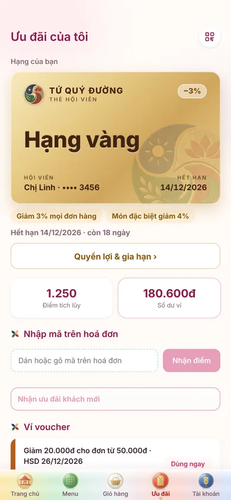
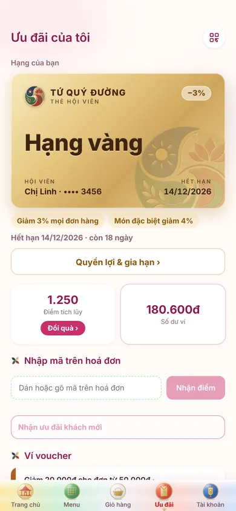
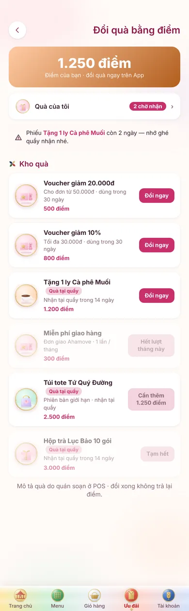
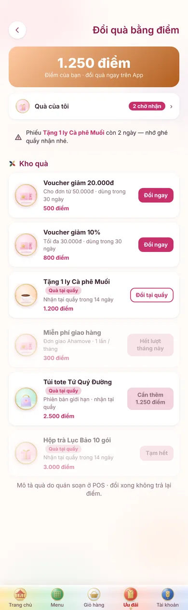
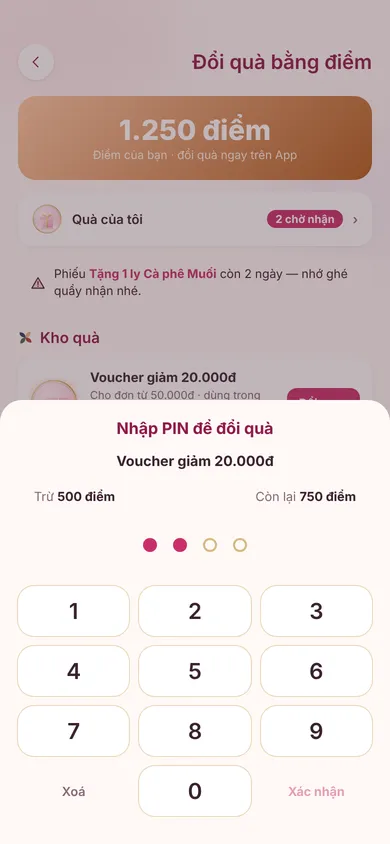
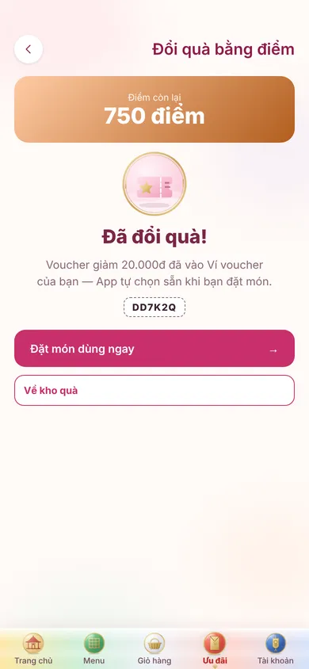
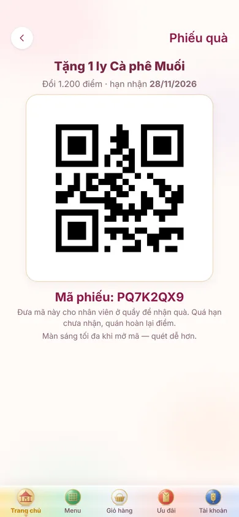
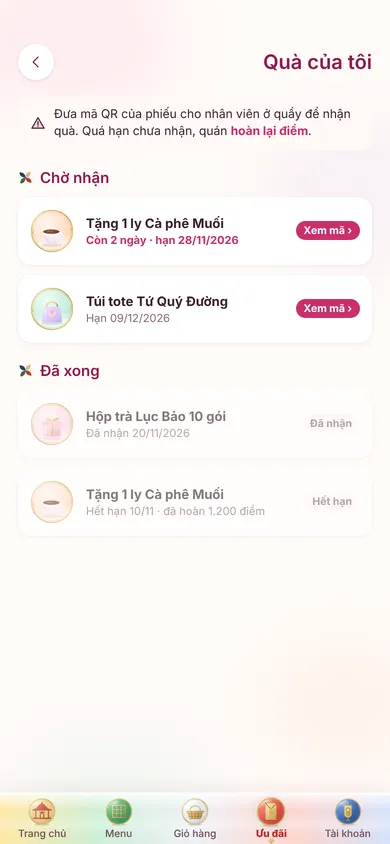
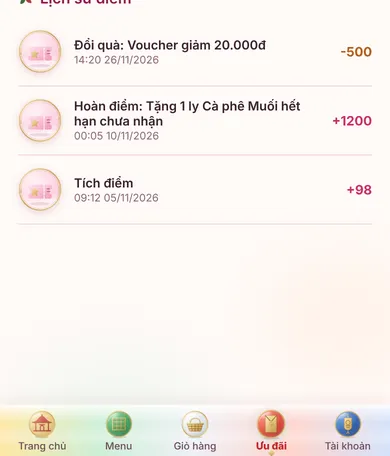

Đổi điểm lấy quà — thiết kế ✅ ĐÃ DUYỆT 26.11
KH-DOI-1 · chat App KH · 26.11.2026 · Ảnh chụp từ App thật (main 80efd3c) với POS giả; màn "Đề xuất" dựng bằng chính kiểu chữ, màu của App. App làm theo hợp đồng POS đã hẹn (thư POS 16.11): kho quà, đổi điểm có PIN, quà của tôi.
POS sẽ làm phần đổi điểm (DOI-DIEM-1) sau khai trương. App có thể làm trước theo hợp đồng đã hẹn, rồi bật khi POS gộp; trong lúc chờ, quầy vẫn đổi giúp như hôm nay.
❓ Câu 1 · Làm khi nào?
- Đề xuất: Giao máy làm ngay sau KH-HUY-1, App để tắt tới khi POS gộp DOI-DIEM-1 (chị bật ở /admin). Không phải chờ.
- Chờ POS làm xong DOI-DIEM-1 rồi mới làm App.
1. Lối vào — ô Điểm ở Ưu đãi

Ô điểm chỉ hiện số, bấm không ra gì.

Thêm nút nhỏ "Đổi quà ›" trong ô điểm (cùng kiểu nút "+ Nạp tiền" ở ô Số dư ví). Bấm cả ô cũng mở Kho quà.
2. Kho quà


| Tình huống | Nút trên thẻ quà |
|---|---|
| Đủ điểm, còn quà | Đổi ngay |
| Thiếu điểm | "Cần thêm N điểm" (xám) |
Quà hiện vật hết tồn (POS con: false) | "Tạm hết" — thẻ mờ |
Đã dùng hết lượt tháng (POS con_luot_thang: 0) | "Hết lượt tháng này" — thẻ mờ |
| Quà hiện vật | Chip "Quà tại quầy" |
Trên cùng: số điểm, ô "Quà của tôi" (đếm phiếu chờ nhận), và dải nhắc khi có phiếu sắp hết hạn (POS báo nhac — còn ≤ 3 ngày).
❓ Câu 2 · Quà hiện vật (ly cà phê, túi tote…) đổi ở đâu?
- Đề xuất: Đổi ngay trên App (có PIN) → khách có phiếu QR, mang tới quầy nhận. POS đã hẹn sẵn cách này.
- Giữ như chị chọn 11.11: App chỉ hiện quà, nút "Đổi tại quầy" — khách ra quầy nhập PIN mới đổi (ảnh kiểu b).
Lý do em đề xuất a: khách đổi lúc rảnh, tới quầy chỉ đưa mã — quầy nhanh hơn, không phải nhập PIN ở quầy.
❓ Câu 3 · Thứ tự quà trong kho
- Đề xuất: Đúng thứ tự chị xếp ở POS.
- Quà khách đủ điểm lên trước, rồi mới theo thứ tự POS.
3. Nhập PIN rồi đổi

Dùng lại bảng PIN đang có (như khi trả bằng ví). Ghi rõ tên quà, số điểm trừ, số còn lại. Sai PIN / khoá PIN → hiện nguyên lời POS.

Voucher vào Ví voucher ngay. Nút "Đặt món dùng ngay" mở Menu; ở Giỏ voucher đã được chọn sẵn.
4. Quà hiện vật — phiếu QR và "Quà của tôi"

Dùng khung màn "Mã thành viên" (quyết định 11.11): quầy quét mã hoặc tra SĐT để bấm "Đã trao".

Chờ nhận (sắp hết hạn thì chữ hồng) · Đã nhận · Hết hạn + "đã hoàn N điểm".

Dòng "Đổi quà: …" và "Hoàn điểm: …" App đã hiện đúng hôm nay — không cần sửa.
❓ Câu 4 · Nhắc phiếu sắp hết hạn
- Đề xuất: Dải nhắc ở đầu Kho quà + chữ hồng trong "Quà của tôi" (như ảnh).
- Như a, thêm chấm đỏ trên tab Ưu đãi.
- Như b, thêm dải nhắc ở Trang chủ.
Trả lời
Mỗi câu hỏi nằm ngay dưới ảnh liên quan. Trả lời ngắn kiểu "1a 2a 3a 4a" là đủ (em đề xuất cả 4 câu chọn a). Chữ nào trên màn cũng sửa được ở /admin.